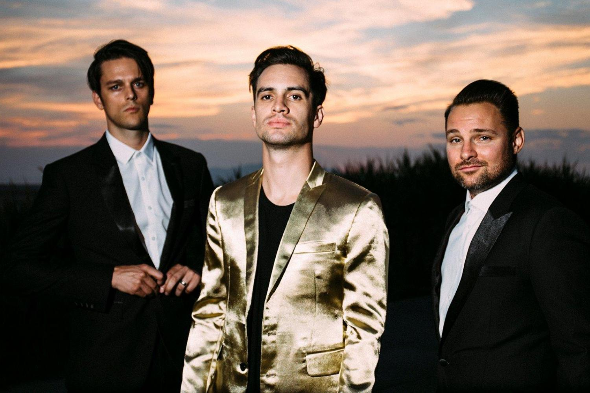
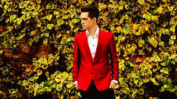
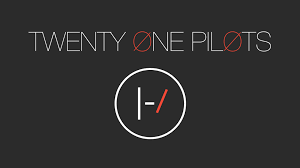

Home | Bands | Hobby | Favorite Vacation
Music is as natural to me as breathing or walking. I could listen to almost any genre and find something that resonated with me. I recently have started going to live shows with my first being the summer of my junior year. The following bands have personally influenced me into learning two instruments, the bass guitar and the ukulele.
Panic at the Disco Twenty Øne Piløts

Much like the typical teenager, I enjoy music that my parents just can’t quite understand. My favorite band to date has to be Panic at the Disco. PTAD features music that ranges from upbeat pop-style songs to luxurious, velvety ballads. I like listening to PTAD because there is a song for every moment and every emotion. I recently received a PTAD record this past Christmas which I listen to often.
All Music provides an overview of the band. The biography tab offers an in-depth look at the history of the band. The discography tab has all of the albums the band has made including full albums, EP’s and compilations. There is also a song tab and a credits tab that list all the individual pieces of music the band has contributed to. The website also makes recommendations for which band the user should listen to next based on their searches.

Connect Music includes a brief biography of the band’s history. Further down the page, this site includes recent information on the happenings of the band's public appearances. There are also reviews of all of the band’s albums and tour announcements. There are related links including, pictures, videos, and music. The site also finds articles that mention the band’s name from a variety of years.
Similar to Panic at the Disco is Twenty Øne Piløts. This band bends the conventional when it comes to genre, containing everything from alternative hip-hop to radio-ready pop hits to gentle ukulele music. I also received a record from this band this past holiday season. I like listening to TOP because there is a song for every moment in every pseudo-genre.
Last FM has information surrounding a band. It lists the top songs produced by the band and shows which ones can be played directly through the site. The albums are also ranked in a similar fashion. The website also recommends artists similar to the searched band based on their characteristics. There is analytics on the listening trends for artists. There is a social media aspect as well that allows you to make an account and displays which songs you listen to the most.

The Rolling Stone is an online version of the printed magazine that features articles interviewing musicians. The articles typically include pictures from the most recent tours and candid moments. Most articles are written by different editors so, there is always a variety of differing points of view. The website goes in depth for its topics and includes facts that delve into the background of the artists and personal interviews.